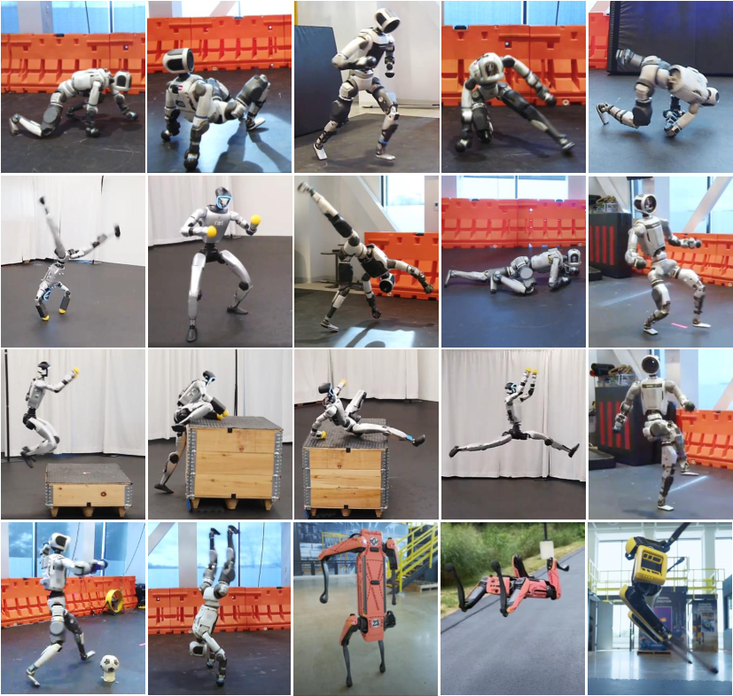
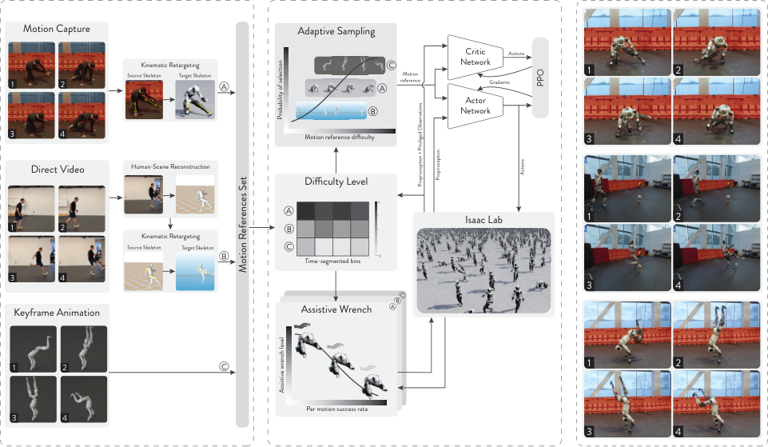
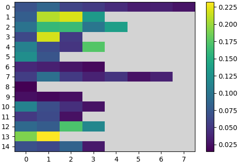
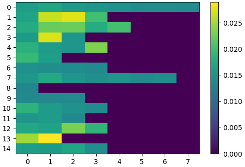
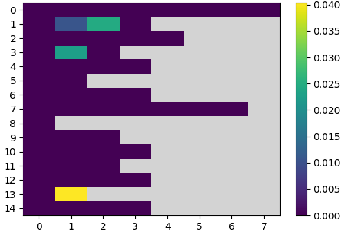
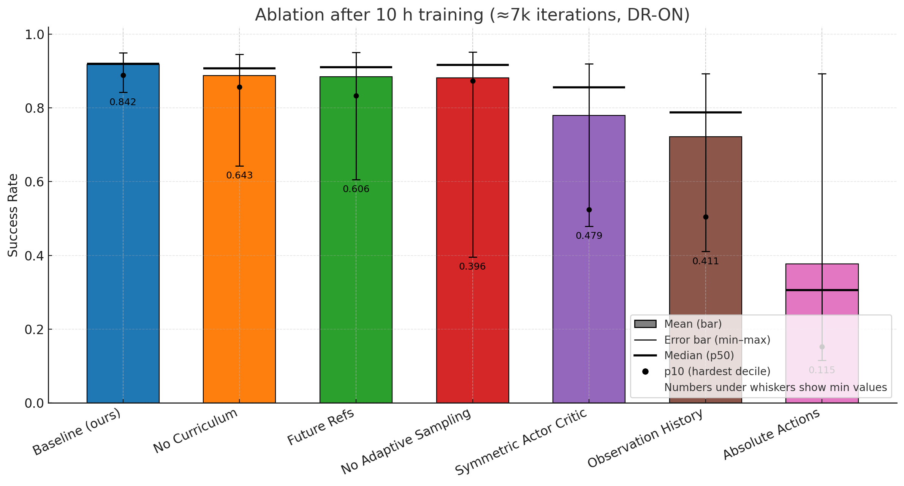
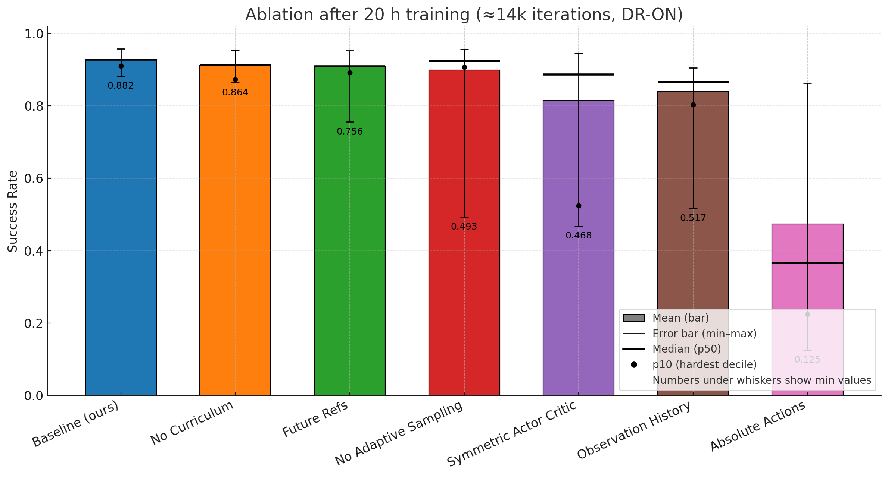

论文信息
- 题目：ZEST: Zero-shot Embodied Skill Transfer for Athletic Robot Control
- 作者：Jean-Pierre Sleiman、He Li、Alphonsus Adu-Bredu、Robin Deits、Arun Kumar 等，共 28 位作者
- 机构：RAI Institute、Boston Dynamics
- 正式发表：Science Robotics，Vol. 11, Issue 117，2026 年 8 月 12 日，Article eaec7695
- DOI：10.1126/scirobotics.aec7695
- 预印本：arXiv:2602.00401，v1 于 2026 年 1 月 30 日提交
- 实验平台：Boston Dynamics Atlas、Unitree G1、Boston Dynamics Spot
- 关键词：Motion Imitation、Adaptive RSI、Assistive Wrench、Residual Action、Sim-to-Real、Whole-Body Multi-Contact
版本说明：本文的技术分析以公开的 arXiv v1 正文和补充材料为主，书目信息已更新为正式期刊版本。论文中的真机展示使用按目标技能分别训练的策略；15 技能统一策略只用于仿真实验。这一区别会贯穿全文。
一句话结论
ZEST 的核心不是提出新的 PPO 或更大的网络，而是把异构动作数据、简单前馈策略、自适应困难片段采样、随学习进度自动消失的模型辅助力，以及面向真实执行器的仿真建模组合成一条低调参训练路线，使 MoCap、普通单目视频和关键帧动画都能转化为 Atlas、G1 与 Spot 上无需真机策略微调的动态全身技能。

原论文图 1：ZEST 从 MoCap、ViCap 和关键帧动画获得的真机动作，包括爬行、翻滚、跑步、霹雳舞、侧手翻、上下箱子、倒立与 Spot 后空翻等。图片来源：Sleiman et al., 2026，CC BY 4.0。
1. 论文真正想解决什么问题
高动态全身运动控制通常有三条路线。
| 路线 | 优点 | 主要困难 |
|---|---|---|
| 离线轨迹优化 + MPC / Whole-Body Control | 结构清楚、约束可解释、能跟踪物理可行轨迹 | 依赖准确模型、状态估计与接触时序；膝、前臂、躯干滑动接触很难逐一建模 |
| 从零开始的 Task RL | 能自行发现接触和恢复动作 | 样本效率低、奖励敏感，容易产生不自然或投机行为 |
| Motion Imitation RL | 动作数据提供自然运动先验，奖励更通用 | 既有系统常依赖接触标签、长历史、未来参考窗口、教师蒸馏或多阶段训练 |
ZEST 要回答的问题是：
能否用一套统一且尽量简洁的运动模仿配方，把质量差异很大的动作参考转成真实腿式机器人的长时域、高动态、多接触技能，同时不为每个动作重新设计接触计划、奖励和控制器？
作者刻意把部署侧压到很小：一个前馈 Actor，只看当前 IMU、关节状态、上一动作和下一个参考状态。复杂性主要被放到训练课程和仿真建模中。
2. 先说清楚：这里的 “Zero-shot” 是什么
ZEST 的 “zero-shot transfer” 很容易被读成“给机器人一个没见过的新动作，它立刻就会”。论文并没有证明这一点。
| 论文实际做到的 | 论文没有证明的 |
|---|---|
| 策略只在仿真中训练，部署到真机后不再做策略微调 | 对训练集外的新参考动作零样本泛化 |
| 同一套训练配方用于 Atlas、G1 和 Spot | 同一组网络权重直接跨机器人使用 |
| MoCap、单目视频和动画都可进入同一流程 | 从原始视频端到端、即时得到真机技能 |
| 同一机器人可联合训练 15 技能策略 | 统一多技能策略在真机上的部署效果 |
| 不为每个技能更改奖励和接触标签 | 每个技能都不需要单独训练 |
更准确的表述是：
已处理的动作参考 |
真机实验中，每项技能通常单独训练约 10 小时。所谓跨形态泛化，是 MDP、奖励与训练路线可以迁移到不同平台；网络、执行器参数和策略本身仍需针对平台训练。
3. ZEST 的完整流程

原论文图 4：三类参考动作进入统一训练流程；失败度同时驱动 Adaptive Sampling 和 Assistive Wrench，Actor–Critic 在 Isaac Lab 中用 PPO 训练，最后直接部署到真机。图片来源：Sleiman et al., 2026。
可以把框架压缩成四步：
MoCap / 单目视频 / 关键帧动画 |
它看起来朴素，但有一个很重要的系统设计：采样课程与辅助课程共享同一份“分段失败度”统计。训练不再依赖人工规定“第几万步把辅助力降到多少”。
4. 三类动作数据如何进入同一个接口
4.1 Motion Capture
MoCap 来自 Xsens 和 Vicon，优点是三维人体运动完整、时序稳定、接触伪影少。Atlas 的自然行走、慢跑、前滚翻、四肢爬行、匍匐、侧手翻和霹雳舞主要来自这类数据。
高质量数据带来的不只是更小的跟踪误差。论文观察到自然的 heel-toe rollover、接近伸直的膝关节、安静落脚和从快速慢跑到站立的平顺过渡；这些细节很难只靠任务奖励逐项塑造。
4.2 Video-Captured Motion
ViCap 使用普通单目视频：
手机视频 |
作者特意用 MegaSaM 替换 TRAM 原本的场景恢复阶段，以减少人物方向错误、漂浮和滑脚。即便如此，ViCap 参考仍会有 pose jitter 和 foot-skidding。
ZEST 没有强迫策略逐点复制这些伪影：奖励允许策略适当偏离根轨迹，只保留动作整体风格和时序。这使 Atlas 可以从视频学习舞蹈与踢球，G1 可以学习芭蕾、跳箱和上下箱子。
4.3 Keyframe Animation
关键帧动画有两个作用：
- 制作人类做不到、但机器人机构允许的动作，例如利用 Atlas 连续旋转关节完成倒立翻转；
- 为 Spot 这类非人形机器人制作参考，例如前肢倒立、连续后空翻、桶滚和 “happy dog”。
动画在运动学上通常很干净，却可能不满足真实动力学或执行器极限。策略因此不会机械地精确跟踪；必要时会牺牲姿态和角速度误差来换取真机可执行性。
4.4 时空重定向不是可有可无的预处理
MoCap 和 ViCap 最终通过 spacetime optimization 映射到目标机器人。目标包括：
- 跟踪源动作的 root position 与 orientation；
- 对齐人体和机器人的对应骨段；
- 惩罚过大关节速度；
- 联合优化统一的空间缩放与时间重采样；
- 满足目标机器人的正运动学、自碰撞与地面非穿透约束。
其中时间缩放尤其重要。腾空动作的高度与持续时间必须和真实重力相容，否则再强的跟踪器也只能在“不可能的参考”与硬件限制之间妥协。
所以论文的 “single-stage” 指策略学习阶段，不代表从原始视频到真机完全没有前处理。
5. MDP、观测与网络
ZEST 写成 goal-conditioned MDP：
策略目标是：
5.1 Actor 看什么
Actor 观测由本体状态和下一个参考状态组成：
| 类型 | 输入 | 部署含义 |
|---|---|---|
| 本体 | torso IMU 角速度 | 当前旋转速度 |
| 本体 | torso 坐标系中的重力方向 | 当前倾斜姿态 |
| 本体 | 关节位置、关节速度 | 机器人构型与运动状态 |
| 本体 | 上一步动作 | 唯一的短期历史信号 |
| 参考 | 基座高度 | 下一时刻目标高度 |
| 参考 | 基座线速度、角速度 | 下一时刻目标运动 |
| 参考 | 基座坐标系中的重力方向 | 下一时刻目标姿态 |
| 参考 | 参考关节位置 | 下一时刻目标构型 |
Actor 不接收：
- 机器人实际的全局位置与 yaw；
- 机器人实际的基座线速度；
- 接触标签或接触状态；
- 一段未来参考窗口；
- 多帧观测历史。
作者假设“当前观测 + 上一步动作”足以在平整地面上隐式推断必要的接触与速度信息。网络只是三层 ELU MLP：
Actor: MLP(512, 256, 128) |
5.2 Critic 为什么可以多看
Critic 还会看到仿真真值：
- 基座线速度与高度；
- 基座和关键刚体的接触力；
- 关键刚体位置与速度；
- 当前 assistive wrench 及其缩放；
- 七项跟踪奖励与任务相位。
这是 asymmetric actor–critic。特权信息只帮助训练阶段估值，部署时仍然只运行 Actor。消融显示，把 Actor 和 Critic 强行改成相同输入会显著伤害最差技能的成功率。
6. 为什么使用残差动作
策略输出不是完整关节目标，而是参考姿态上的修正：
其中 是各关节的动作尺度。髋、膝等需要较大主动补偿的关节使用更大尺度；头部和腕部等主要靠 PD 就能跟住参考的关节使用更小尺度。
残差动作降低了两个训练难点：
- 策略初始化时输出接近 0，命令仍接近合理参考，而不是把机器人拉向全零姿态；
- 探索只需学习“参考动作在真实动力学下还差多少”，不用重新合成完整关节轨迹。
消融中的 absolute action 是所有方案里最差的，这说明 reference feedforward 并不是可忽略的接口细节。
7. 关节 PD 与执行器模型
7.1 PD 增益从有效 armature 出发
作者把每个关节近似成独立二阶系统：
按照期望自然频率 设计临界阻尼：
过低会跟踪迟钝，过高会让真机控制变脆、仿真数值变硬。仿真和真机使用相同 PD 增益，以减少接口差异。
真正难点在 ：Atlas 与 G1 的膝、踝和腰部存在 Parallel-Linkage Actuator（PLA），电机经过闭链连杆驱动输出关节，不能只把普通树形刚体惯量直接代入。
7.2 四级 PLA 近似
| 模型 | 思路 | 代价与用途 |
|---|---|---|
| Exact / Projected | 完整投影闭链动力学 | 准确，但大规模 RL 太慢 |
| Locally Projected | 假设支撑连杆无质量，保留电机 armature | 得到随构型变化的有效惯量 |
| Dynamic Armature | 用 Jacobi 近似处理耦合 PLA 的非对角项 | 标准模拟器可以实现 |
| Nominal Armature | 在标称构型计算一次并固定 | 避免每步更新造成约 20% 仿真减速 |
局部投影后的有效惯量核心形式为：
其中 是从输出关节速度到电机侧速度的运动学映射。
Nominal Armature 一举两用：既给模拟器一个便宜的惯量近似，也给 PD 增益一个有物理依据的尺度。附录中的 G1 定性对照还显示：忽略这种投影的策略在仿真里看起来相近，却在侧手翻、乒乓球和下箱子真机测试中持续失败。
Spot 则另行加入功率限制、磁饱和、转子惯量、传动效率和摩擦模型。这里体现了论文非常务实的一面：网络可以简单，但硬件动力学不能凭空消失。
8. 奖励为什么能跨技能复用
总奖励只有三组：
跟踪项统一使用指数核：
| 奖励组 | 内容 | 作用 |
|---|---|---|
| Tracking | 基座位置、姿态、线/角速度，关节位置，关键刚体位置与姿态 | 保留参考动作的整体形态与时序 |
| Regularization | 动作变化、关节加速度、关节位置限位、力矩限位 | 抑制冲击、抖动和硬件不可行命令 |
| Survival | 每步常数正奖励 | 避免过早失败终止 |
这里没有：
- “此刻左脚接触、下一刻右手接触”的标签；
- 为侧手翻、爬箱或霹雳舞分别设计的技能奖励；
- 强制身体始终直立的项。
因此手、膝、前臂、躯干甚至背部可以自行成为接触部位。超过接触力阈值或偏离参考过远时，episode 会提前终止，引导采样回到较有希望的状态。
9. Adaptive RSI：把训练预算花在真正困难的片段上
普通 Reference State Initialization（RSI）在每次 reset 时，从参考轨迹中均匀抽一个相位，并把机器人初始化到对应参考状态。它比只从动作开头训练高效，但长动作或多动作联合训练时仍有问题：
- 已掌握的简单片段被反复抽到；
- 困难片段可能一开始就失败，获得的数据反而更少；
- 多技能训练倾向优化平均表现，最难的尾部长期没有补齐。
ZEST 把第 条轨迹切成时间 bin，并为每个有效 bin 维护失败度 。
一次 rollout 的长度归一化相似度为：
提前终止会缺少后续项，因此自然得到更低分数。失败度使用 EMA 更新：
下一次 reset 的轨迹片段由下式采样：
前半部分让失败度高的片段被更多采样；后半部分给所有片段保留均匀底概率，避免学会后就永远不再访问，进而灾难性遗忘。
论文使用的 bin 宽度为：
因此它不是精确到单帧的 priority replay，而是以几秒动作段为单位重新分配训练预算。
10. Assistive Wrench：让机器人先被“托一下”，再独立完成
倒立、侧手翻、后空翻等动作有大幅基座旋转。训练初期，策略一进入这些相位就可能立即摔倒；仅靠 RSI 把机器人放到半空中，并不能告诉它接下来如何产生正确角动量。
作者在仿真中对 torso 施加虚拟空间力：
和 来自参考加速度前馈、基座位置/姿态误差 PD、速度误差与重力补偿。关键是辅助比例不按固定训练步数衰减，而是直接由同一个 bin 失败度决定：
其中 ，。
- 失败多、相似度低：采样更频繁，辅助也更强；
- 学会后：失败度下降，辅助自动减弱；
- 相似度达到阈值：，策略必须在正常物理下完成动作；
- ：辅助永远不是完全接管，策略从一开始就必须出力。
| 分段失败度 | 采样概率 | Assistive Wrench 比例 |
|---|---|---|
 |
 |
 |
原论文图 3 的三个训练中期热图。纵轴是 15 条动作，横轴是时间 bin；灰色区域表示该轨迹没有对应时间段。最难的 cartwheel-to-backflip 片段获得更高采样概率和辅助强度，简单 deep squat 则很快不再需要辅助。
这套闭环是我认为论文中最值得复用的算法设计：一个可在线统计的困难度，同时控制“去哪训练”和“给多少帮助”。
11. 训练与 Sim-to-Real 配置
11.1 核心训练参数
| 项目 | 配置 |
|---|---|
| 模拟器 / 算法 | Isaac Lab / PPO |
| 并行环境 | 4096 |
| 仿真步长 | 0.004 s |
| Control decimation | 5 |
| 控制周期 | 0.020 s，即 50 Hz |
| Episode length | 10 s |
| 折扣因子 / GAE | 0.99 / 0.95 |
| PPO clip | 0.2 |
| 每个真机技能的典型训练 | 单张 NVIDIA L4，约 10 h，约 7000 iterations |
11.2 Moderate Domain Randomization
| 随机化 | 训练范围 |
|---|---|
| 静摩擦系数 | |
| 动摩擦系数 | |
| 恢复系数 | |
| 连杆质量 | 标称值的 倍 |
| 外部冲量 | 随机时刻向基座施加， |
| 观测 | IMU、关节位置与速度加入零均值高斯噪声 |
作者强调随机化不能越多越好。过强的变化会让策略为了覆盖极端情况而过度保守或激进。附录压力测试还表明：
- actuator delay 的影响最大，而训练中并没有直接随机化 delay；
- 初始状态扰动在已训练随机化中伤害最大，极端扰动会把机器人放进不可恢复的自碰撞状态；
- 质量和观测噪声的影响相对温和；
- 推力与摩擦变化更容易伤害最差动作的尾部表现。
12. 三类机器人上的真机结果
| 数据源 | 机器人 | 代表动作 |
|---|---|---|
| MoCap | Atlas | walk、jog、forward roll、roll/crawl on all fours、army crawl、cartwheel、breakdance |
| MoCap | G1 | cartwheel、table-tennis |
| ViCap | Atlas | soccer kick、三段 dance |
| ViCap | G1 | ballet、jump onto box、climb up/down box |
| Animation | Atlas | handstand invert |
| Animation | Spot | handstand balance、continuous backflip、barrel roll、happy dog |
论文表 1 一共列出 23 条真机动作。下面选取几个有代表性的跟踪误差；数值只统计 成功 trials，越低越好。
| 动作 | 机器人 | 关节位置 MAE（rad） | 基座姿态 MAD（rad） | 基座角速度 ML2（rad/s） |
|---|---|---|---|---|
| Walk | Atlas | 0.0568 | 0.0300 | 0.3642 |
| Jog | Atlas | 0.0413 | 0.0593 | 0.6994 |
| Army crawl | Atlas | 0.1033 | 0.0754 | 1.0107 |
| Cartwheel | Atlas | 0.0835 | 0.0643 | 1.7338 |
| Climb up box | G1 | 0.073 | 0.385 | 0.855 |
| Continuous backflip | Spot | 0.1922 | 0.1496 | 0.7320 |
简单步态的误差通常更低；大角速度、多部位接触和接近执行器极限的动作误差更高。这里不能只看均值判断“好不好”：对于动画中动力学不可行的部分，主动偏离参考恰恰可能是真机成功所必需的。
Spot 的 barrel roll 过程中 IMU 一度饱和，论文在对应时段排除了 IMU 指标；策略仍完成了动作。这是有说服力的定性鲁棒性案例，但不能据此推断系统普遍不需要可靠 IMU。
13. G1 上下箱子的重复性与边界
论文对上下箱子给出了比其他动作更具体的重复测试：
- 标称条件下，climb up 和 climb down 各连续运行 5 次，均为 5/5；
- 训练初始化范围内的测试全部成功，范围约为位置 、yaw ；
- 躯干增加 2 kg 负载后，上下箱子仍有成功执行；
- 训练箱高为 ，标称值 0.75 m；
- climb up 在 0.55 m 箱体上成功；
- climb down 在 0.55 m 和 0.95 m 箱体上成功。
但这并不是视觉闭环的场景交互。策略没有看到箱子位置，也没有使用相机；它依赖机器人与箱子从接近训练分布的相对位姿开始。论文也观察到分布外初始化会出现失败。
因此这组实验更准确地证明：一个只看本体状态的动态策略能吸收有限初始误差与物理变化，而不是“机器人能自行寻找并攀爬任意箱子”。
14. 多技能仿真消融怎么读
作者另外训练一个 Atlas 的 15 技能统一策略，包括 army crawl、舞蹈、走跑、霹雳舞、侧手翻、蹲行、深蹲、光剑动作、cartwheel-to-backflip 等。它用于仿真分析，没有部署真机。
每项参考在完整 domain randomization 下运行 10,000 次 rollout。图中的柱是跨动作平均成功率，圆点是 p10，粗线是中位数，数字表示 15 项动作中的最低成功率。

原论文图 3e：约 7000 iterations 后的多技能仿真消融。完整方法的平均与尾部表现最好；绝对动作最差。

原论文图 3f：约 14,000 iterations 后，部分消融在平均值上缩小差距，但完整方法的最差动作仍更接近平均水平。
从图中读取的最低成功率如下：
| 方案 | 10 h 最低成功率 | 20 h 最低成功率 | 主要含义 |
|---|---|---|---|
| ZEST 完整版 | 0.842 | 0.882 | 平均与困难动作尾部都稳定 |
| 无 assistive curriculum | 0.643 | 0.864 | 最终能追上，但样本效率更低 |
| 20 步 future references | 0.606 | 0.756 | 更大输入在相同 MLP 与预算下反而难学 |
| 无 adaptive sampling | 0.396 | 0.493 | 平均值未必很差，但困难动作长期被忽略 |
| symmetric actor–critic | 0.479 | 0.468 | 去掉 Critic 特权信息后估值与尾部鲁棒性变差 |
| 20 步 observation history | 0.411 | 0.517 | 堆历史增加冗余和 credit assignment 难度 |
| absolute actions | 0.115 | 0.125 | 丢失参考 feedforward，探索负担最大 |
需要克制解释 future/history 的负结果。作者只在当前 MLP、超参数与固定预算下比较；这不能推出 Transformer、RNN 或所有序列模型都不应该使用历史。论文自己也明确承认这一点。
15. 与 Whole-Body MPC 的对照
比较在仿真中进行。MPC 的接触时序通过脚离地距离和速度启发式从参考中提取，并且需要人工修正；控制器原生支持手、脚接触，不支持膝、前臂和躯干等任意接触。
| 动作 | 关节 MAE：MPC | 关节 MAE：RL | 姿态 MAD：MPC | 姿态 MAD：RL |
|---|---|---|---|---|
| Walk | 0.0467 | 0.0554 | 0.0202 | 0.0280 |
| Jog | 0.1172 | 0.0757 | 0.1099 | 0.0621 |
| Cartwheel | 0.2371 | 0.0882 | 0.0597 | 0.0628 |
| Handstand invert | 失败 | 0.1466 | 失败 | 0.1250 |
| Roll on all fours | 失败 | 0.0862 | 失败 | 0.0914 |
| Dance B | 失败 | 0.0964 | 失败 | 0.1503 |
结论不是“RL 全面胜过 MPC”：
- Walk 的接触简单、标注准确、运动不逼近极限，MPC 略好；
- Jog 的起始接触标签不一致，即便人工修正，MPC 仍明显退化；
- Cartwheel 中 RL 的关节误差更低，但姿态误差略高；
- 三项失败动作分别暴露了接触标注、力矩饱和与非标准接触问题；
- 大量膝、躯干、前臂接触技能因 MPC 接口不支持，根本没有进入同条件比较。
这组实验最能支持的是：不显式规定接触的学习控制器更容易扩展到接触部位和时序都复杂的动作，而不是所有运动控制场景都应抛弃模型方法。
16. 论文最重要的局限
16.1 没有测试未见动作泛化
多技能策略只跟踪训练库中的 15 条动作。作者没有给它相近但未见的参考，因而不能判断网络学到了可组合控制原语，还是主要记住了特定轨迹附近的稳定器。
这也是标题中 “zero-shot” 最需要防止误读的地方。
16.2 真机不是一个统一多技能策略
真机结果主要来自单技能专用策略。统一策略的可扩展性、容量、技能干扰与真机鲁棒性仍待验证。
16.3 环境假设很强
当前 Actor 只有本体感知，假设地面平整且不湿滑。它没有视觉、地形高度图、物体位姿或柔顺环境估计，因此无法根据未知几何自主调整参考。
16.4 “不需要状态估计”不等于“不需要参考”
Actor 不需要估计自身全局 pose 和基座线速度，但每一步仍必须接收时间对齐的下一参考状态。它本质上是 reference tracker，不是仅凭语言或稀疏目标自行规划动作的控制器。
16.5 Sim-to-Real 仍依赖高质量建模
策略没有用真机数据微调，不代表整个流程完全不使用真实系统知识：
- PLA 几何、转子惯量和执行器参数来自分析与制造商信息；
- Spot 的正负做功效率范围用真实动态日志辨识；
- 真机安全限制、功率约束与部署接口仍需工程实现。
论文没有把 system identification 自动化，Spot 的部分专有功率限制细节也无法完整公开复现。
16.6 真机成功率证据不完整
除上下箱子外，多数动作没有报告完整 trial 数与成功/失败统计。表 1 的误差只在成功 trials 上计算，因此它反映跟踪质量，不等于每个动作的总体成功概率。
17. 如果我要复现
我会按下面顺序逐层增加难度：
- 单机器人、单条简单 MoCap：先验证 RSI、残差动作、PD 与通用 tracking reward；
- 单条高动态动作：加入 assistive wrench，确认 能随成功度自动降到 0；
- 一条长时域动作：切成 bin，记录失败度、采样概率和各 bin visitation count；
- 小型动作库：先混合 walk、squat、cartwheel 三类难度明显不同的轨迹，检查是否发生简单技能主导；
- 建立仿真—真机接口一致性：相同 PD 增益、控制频率、限位、动作尺度和观测归一化；
- 再做执行器辨识与随机化：不要指望 domain randomization 掩盖结构性错误模型；
- 最后才接 ViCap：分别记录 3D 重建误差、重定向误差和控制跟踪误差，避免把所有失败归给 RL。
最小可复现配置可从论文附录直接取得：4096 环境、50 Hz 控制、PPO、Actor 512-256-128、Critic 512-512-256、不超过 4 s 的时间 bin、EMA 、uniform floor 、。
截至本文整理时，论文和 arXiv 页面没有提供可直接复现的训练代码、完整平台模型与 checkpoint，因此“复现算法思想”比“复现 Atlas 真机能力”现实得多。
18. 最值得记住的四点
- Zero-shot 是 sim-to-real，不是 unseen-motion generalization。
- 真正的核心是困难度驱动的采样与辅助耦合，而不是网络规模。
- 残差动作、合理 PD 和执行器模型共同决定了策略是否有机会迁移。
- 论文最强的证据是同一配方跨数据源、跨形态的真机广度；最弱的环节是统一策略与未见动作泛化。
19. 最终评价
ZEST 是一篇非常“系统工程型”的好论文。它没有把创新包装成神秘的大模型，而是认真回答了一个更现实的问题：怎样减少每增加一个全身技能时都要重写奖励、接触状态机和控制器的成本。
我认为最有价值的不是机器人会霹雳舞或后空翻，而是下面这条设计逻辑：
动作数据负责提供自然运动先验 |
它离“一个真机策略执行任意新动作”仍有明显距离，但已经证明：在硬件建模足够扎实的前提下，一个结构很简单的策略，也可以成为多源动作数据和真实机器人之间可扩展的接口。